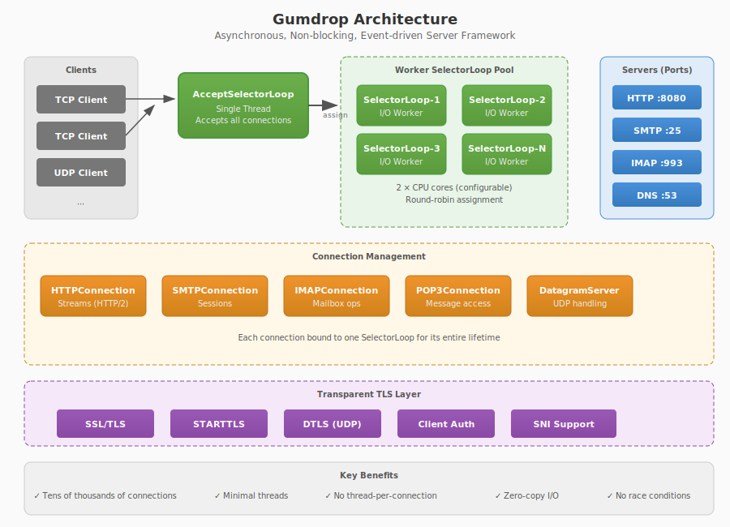
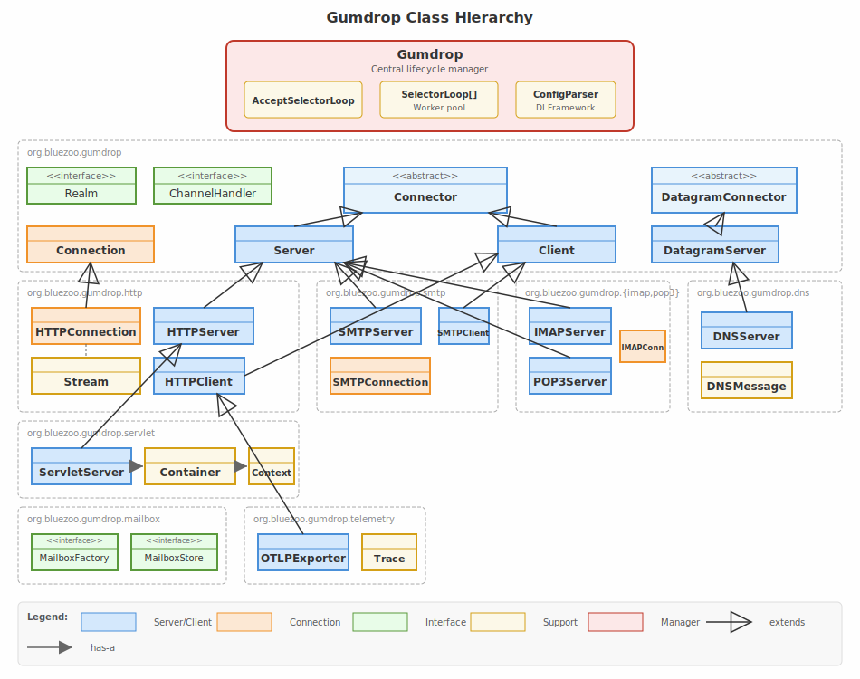

|
|
gumdrop |
Congratulations, you've installed Gumdrop!
Gumdrop is a multipurpose Java server framework using asynchronous, non-blocking, event-driven I/O. It provides a generic, extensible server architecture with transparent TLS support, and includes implementations for HTTP, SMTP, IMAP, POP3, FTP, and DNS protocols.
Gumdrop uses an event-driven, non-blocking I/O architecture first developed in
2005 based on the then-new Java NIO Selector API. This architecture was the
original motivator for the project at a time when mainstream enterprise servlet
containers still used blocking java.net.Socket implementations
that directly tied the number of incoming connections to JVM threads,
preventing scalability.

Traditional synchronous servers allocate one thread per connection. A thread blocks on socket read, processes the request, blocks on socket write, and repeats. This model is simple but has fundamental scalability limitations:
Gumdrop's asynchronous architecture inverts this model. A small, fixed pool of worker threads (default: 2× CPU cores) handles I/O for all connections:
Selector notifies
workers when connections are readyThe event-driven model is particularly suited to modern distributed enterprise systems where services communicate over HTTP, message queues, and databases. These systems are inherently I/O-bound: services spend most time waiting for network responses. An event-driven server maximises throughput by never waiting—when one connection is idle, the worker immediately serves another.
A single AcceptSelectorLoop thread handles accepting new
connections on all server ports. When a connection is accepted, it is assigned
to one of a pool of worker SelectorLoop threads using round-robin
distribution. Each connection is bound to a single worker for its entire
lifetime, eliminating race conditions and simplifying state management.

The Server abstract class represents a TCP server listening on a
port. When the AcceptSelectorLoop accepts a connection on a
server's port, it delegates to the server to create a protocol-specific
Connection instance.
Server implementations define:
getPort() - the port to listen onnewConnection() - factory method for protocol connectionsacceptConnection() - optional connection filtering (IP blocking,
rate limiting)
All servers share common TLS configuration inherited from Connector:
keystore file, password, format, client authentication requirements, and ALPN
protocol negotiation.
The Client abstract class represents an outbound TCP connection.
Clients share the same event-driven infrastructure as servers—outbound
connections are assigned to worker SelectorLoop threads and
benefit from the same non-blocking I/O model.
When a client is created within a server context (e.g., an SMTP relay
forwarding mail), it can be assigned to the same SelectorLoop as
the originating server connection. This SelectorLoop affinity provides:
The Connection abstract class represents a TCP protocol handler.
All I/O and TLS processing for a connection occurs on its assigned
SelectorLoop thread. Subclasses implement protocol-specific logic:
receive(ByteBuffer) - called when data arrivessend(ByteBuffer) - queues data for transmissionstartTLS() - initiates STARTTLS upgradeclose() - closes the connection
Protocol implementations (HTTP, SMTP, IMAP, etc.) extend Connection
and implement protocol parsing, state machines, and business logic. The
framework handles read/write buffering, TLS encryption/decryption, and
connection lifecycle.
Stateful protocols such as SMTP, IMAP, and POP3 present a particular challenge: tracking the current protocol state and understanding what operations are valid at any given moment. This difficulty is compounded by event-driven architectures like Gumdrop, where the complexity of asynchronous callbacks can be bewildering.
Gumdrop addresses this with a staged handler pattern that compartmentalises protocol processing into discrete stages, each with clear goals and decisions:
For example, an SMTP handler progresses through well-defined stages:
ClientConnected → HelloHandler → MailFromHandler → RecipientHandler → MessageDataHandler
At each stage, the handler receives protocol events (EHLO, MAIL FROM, RCPT TO) and uses the provided state interface to accept, reject, or make policy decisions. The connection handles all protocol mechanics — SASL authentication challenges, TLS negotiation, command parsing — leaving the handler to focus on business logic.
The same pattern works for both servers and clients. An SMTP client handler receives events from the server (greeting, EHLO response, authentication challenges) and uses state interfaces to drive the conversation forward. This symmetry simplifies relay implementations where a server connection drives a client connection.
Each protocol includes default handler implementations for common use cases:
LocalDeliveryHandler for mailbox delivery,
SimpleRelayHandler for MX forwardingDefaultIMAPHandler accepts all operations using
the configured Realm and MailboxFactoryDefaultPOP3Handler accepts all operations using
the configured Realm and MailboxFactoryThese implementations handle the common case while serving as examples for custom handlers. In many deployments, the default handlers with appropriate configuration are sufficient.
For UDP-based protocols, DatagramServer provides the same
event-driven model. Unlike TCP, there are no per-client connection objects—the
server receives datagrams directly and sends responses to the source address.
The DNS server demonstrates this abstraction, providing a complete DNS proxy that can be subclassed for custom name resolution. DTLS (TLS for UDP) is supported transparently, with per-remote-address session management handled automatically.
All connections support transparent TLS encryption. The framework handles:
To enable TLS, configure the keystore on any server:
<server class="org.bluezoo.gumdrop.smtp.SMTPServer">
<property name="port">465</property>
<property name="secure">true</property>
<property name="keystore-file">keystore.p12</property>
<property name="keystore-pass">secret</property>
</server>
Servers provide configurable connection lifecycle management:
Timeouts can be configured with time unit suffixes (ms, s,
m, h):
<server class="org.bluezoo.gumdrop.imap.IMAPServer">
<property name="idle-timeout">30m</property>
<property name="read-timeout">60s</property>
<property name="connection-timeout">2m</property>
</server>
Connections track timestamps for creation, last activity, and connection establishment
(after TLS handshake for secure connections). These are accessible via
getTimestampCreated(), getTimestampLastActivity(), and
getTimestampConnected().
Gumdrop uses a lightweight dependency injection (DI) framework to wire together
its components. The gumdroprc XML file defines components with
properties and references.
id and class
attributes define objects registered in the component registry<property name="..."> child elements
set bean properties with automatic type conversionref="#componentId" injects references to
other components<list> and <map>
elements configure collection properties
<gumdrop>
<!-- Authentication realm -->
<realm id="myRealm" class="org.bluezoo.gumdrop.auth.BasicRealm">
<property name="href">users.xml</property>
</realm>
<!-- Mailbox storage -->
<mailbox-factory id="maildir"
class="org.bluezoo.gumdrop.mailbox.maildir.MaildirMailboxFactory">
<property name="basedir">/var/mail</property>
</mailbox-factory>
<!-- Telemetry -->
<component id="telemetry" class="org.bluezoo.gumdrop.telemetry.TelemetryConfig">
<property name="enabled">true</property>
<property name="service-name">mail-server</property>
<property name="endpoint">http://collector:4318</property>
</component>
<!-- IMAP server with TLS -->
<server id="imaps" class="org.bluezoo.gumdrop.imap.IMAPServer">
<property name="port">993</property>
<property name="secure">true</property>
<property name="keystore-file">keystore.p12</property>
<property name="keystore-pass">secret</property>
<property name="realm" ref="#myRealm"/>
<property name="mailbox-factory" ref="#maildir"/>
<property name="telemetry-config" ref="#telemetry"/>
</server>
</gumdrop>
gumdrop.workers - number of worker SelectorLoop threads
(default: 2× CPU cores)java.util.logging.config.file - logging configurationThe Gumdrop logo is a gumdrop torus, generated using POV-Ray. A gumdrop torus is a mathematical construct—the logo is such a torus viewed from an angle that makes it resemble the letter G. All images were created using POV-Ray and/or GIMP and are copyright 2005 Chris Burdess.
Explore the protocol-specific documentation linked above, or examine the example configurations and test applications. If the speed, simplicity, and ease of configuration appeals to you, please consider getting involved and developing a new feature.
If you have any questions about Gumdrop, please direct them to Chris Burdess.
Thanks for trying out Gumdrop.
Gumdrop